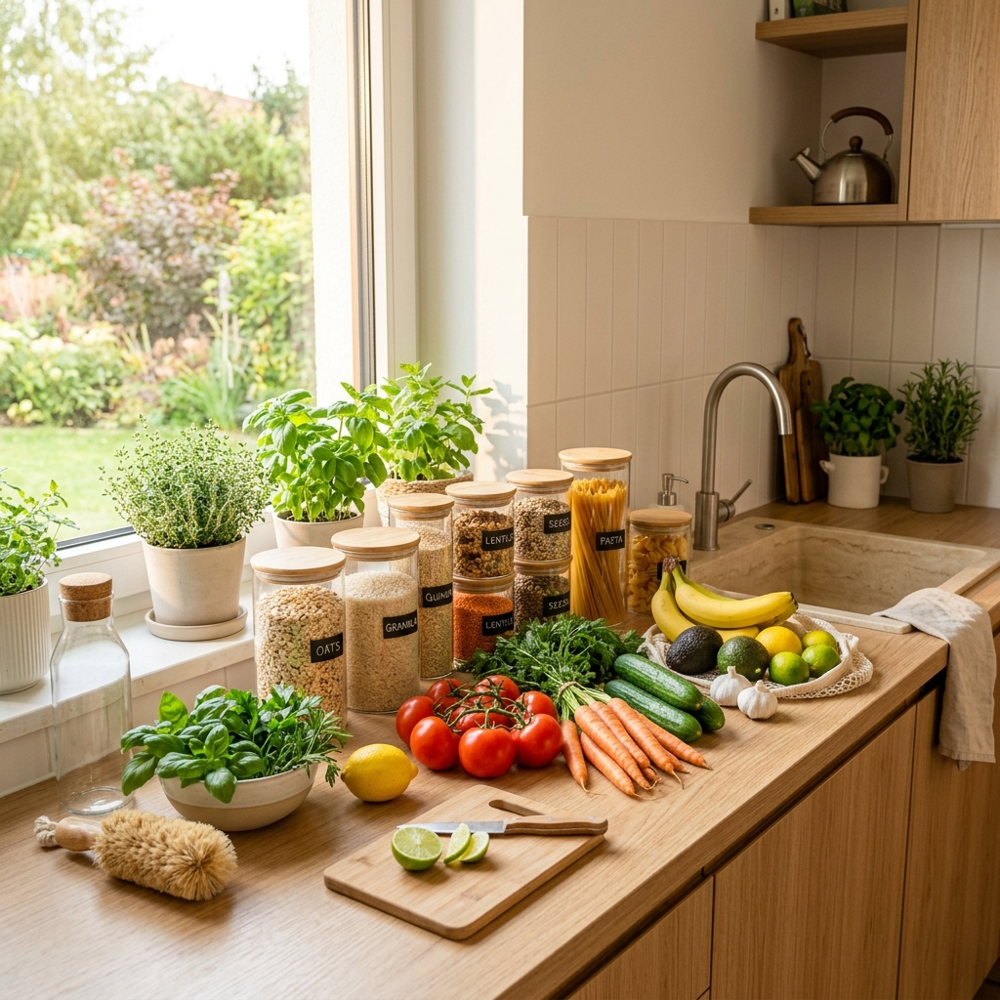

01
Smart Food Storage
Learn optimal temperature zones and produce preservation techniques to double your fresh food's shelf life and prevent premature spoilage.
Simple, actionable strategies to audit household food waste, extend fresh produce shelf life, save money on groceries, and share surplus food with your community.

Learn optimal temperature zones and produce preservation techniques to double your fresh food's shelf life and prevent premature spoilage.

Estimate your household's annual grocery savings and carbon footprint reduction in real time with our customized assessment tool.

Connect with local food banks, neighborhood fridges, and surplus redistribution networks to ensure no good food goes to waste.
An average family of four can save over $1,500 every year simply by reducing food wastage and planning meals effectively.
Food waste in landfills generates methane gas. Reducing household waste is one of the most effective personal climate actions.
Surplus unopened pantry items and homegrown produce can directly support neighbors and local food pantries in need.